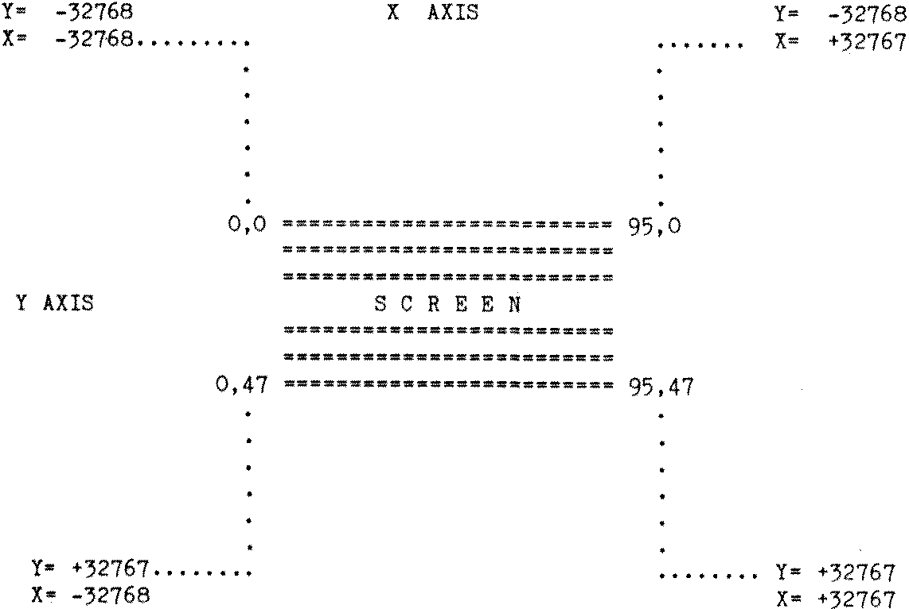

80-Bus News |
March–April 1983 · Volume 2 · Issue 2 |
| Page 25 of 55 |
|---|
| NAS-Graphpac System Manual | Page 4 |
|---|
The following chart may help you to understand the physical relationship between graphica co-ordinates.
| NAS-Graphpac System Manual | Page 5 |
|---|
The following commands are included in NAS-GRAPHPAC. Detailed descriptions on each command are given in the Command Manual. The standard BASIC “SCREEN” statement remains operational and therefore the documentation in the Command Manual relating to the Graphpac “SCREEN” command should de ignored.
| GCLR | Clear screen of graphic characters |
| FCON | Cause FCerr when plotting off the screen |
| FCOFF | Plotting off screen is not trapped |
| PSET X,Y | Set bright the specified pixel |
| PRESET X,Y | Reset dark the specified pixel |
| STARTAT X,Y SA X,Y | Position CAP at specified co-ordinate |
| PENUP PU | This pen mode causes no action while moving CAP |
| PENDOWN PD | Prepare to set pixels following the CAP’s movement |
| PENFLIP PF | Prepare to invert pixels |
| PENERA PE | Prepare to erase pixels |
| PENRET PR | Restore previous CAP co-ordinates |
| DRAWTO X,Y | Move CAP to new X,Y |
| DRAW X,Y | Move the CAP relative to the current X,Y |
| PLOT A,D | Move the CAP to new X,Y based on Angle, Distance |
| DOCAP | The pixel at the CAP is set, reset or inverted |
| RATIO n | Correction factor for CIRCLE and PLOT |
| CIRCLE R,A1,A2 | Draw a circle or arc |
| CAP | Print CAP on the screen |
| PTEST X,Y:PEEK(4177) | Test specified pixel using location 1051 hex. |
| Page 25 of 55 |
|---|